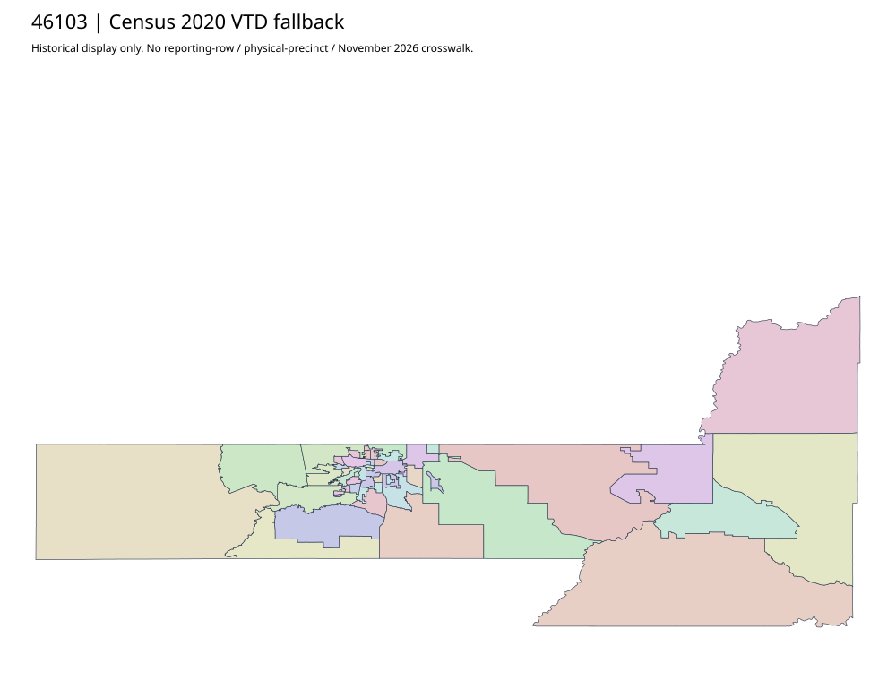

304 ordered indexPennington | 46103
Official district-map parent links the acquired Experience app. Actual configured webmap leads to complete53 native precinct features including one true curve. Embedded older child service404 and linked original PDFs403 remain. Native snapshot is not an approved historical/current reporting join; linear geometry defects remain unchanged.
38 priority / 46 full historical observations. Parent is a summary ancestor, not additive to leaves. No physical feature matches or current reporting crosswalk approved.
Acquired shared-parent assets
native:pennington: 53 native features, 1 true curves. All attributes/schema/diagnostics. Linear display preview. Originals retain curves.
pennington-native-page01: complete original gzip
pennington-native-page02: complete original gzip
Census2020 fallback
47 native historical VTD features. Entire785-feature ZIP original retained once, all66 counties. Yankton has one countywide VTD. No current/reporting allocation. complete original gzip

Full binary/attribute/geometry QA
Observed authority/acquisition routes
Complete SOS authority fields including original blank/masked values: parent inventory. No contacts were sent.
Ordered full children
- Precinct AW | 4881 source votes | priority
- Precinct BE | 2827 source votes | priority
- Precinct 3-2 | 2492 source votes | priority
- Precinct 3-3 | 2435 source votes | priority
- Precinct 5-5 | 2154 source votes | priority
- Precinct 2-2 | 2019 source votes | priority
- Precinct 3-4 | 1920 source votes | priority
- Precinct 5-4 | 1775 source votes | priority
- Precinct 1-3 | 1761 source votes | priority
- Precinct VF | 1753 source votes | priority
- Precinct 1-5 | 1730 source votes | priority
- Precinct 5-3 | 1535 source votes | priority
- Precinct 1-1 | 1532 source votes | priority
- Precinct 1-2 | 1493 source votes | priority
- Precinct 3-5 | 1431 source votes | priority
- Precinct HR | 1398 source votes | priority
- Precinct HC | 1368 source votes | priority
- Precinct JS | 1351 source votes | priority
- Precinct RV | 1346 source votes | priority
- Precinct 4-3 | 1331 source votes | priority
- Precinct 4-2 | 1308 source votes | priority
- Precinct VV | 1288 source votes | priority
- Precinct WP | 1277 source votes | priority
- Precinct 1-4 | 1095 source votes | priority
- Precinct 2-4 | 1084 source votes | priority
- Precinct 4-1 | 1033 source votes | priority
- Precinct 5-2 | 1023 source votes | priority
- Precinct 2-3 | 972 source votes | priority
- Precinct 2-5 | 941 source votes | priority
- Precinct 5-1 | 766 source votes | priority
- Precinct NU | 740 source votes | priority
- Precinct 4-4 | 735 source votes | priority
- Precinct CA | 722 source votes | priority
- Precinct DT | 712 source votes | priority
- Precinct CL | 645 source votes | priority
- Precinct KY | 631 source votes | priority
- Precinct 4-5 | 595 source votes | priority
- Precinct LS | 457 source votes | priority
- Precinct WL | 398 source votes | remainder
- Precinct 3-1 | 392 source votes | remainder
- Precinct 2-1 | 357 source votes | remainder
- Precinct SR | 281 source votes | remainder
- Precinct QU | 268 source votes | remainder
- Precinct NH | 170 source votes | remainder
- Precinct WS | 97 source votes | remainder
- Precinct RK | 56 source votes | remainder